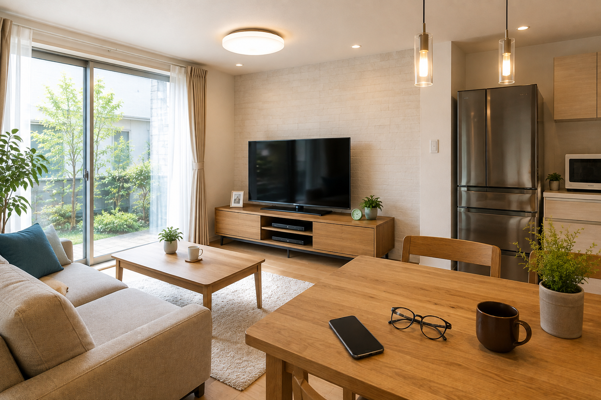
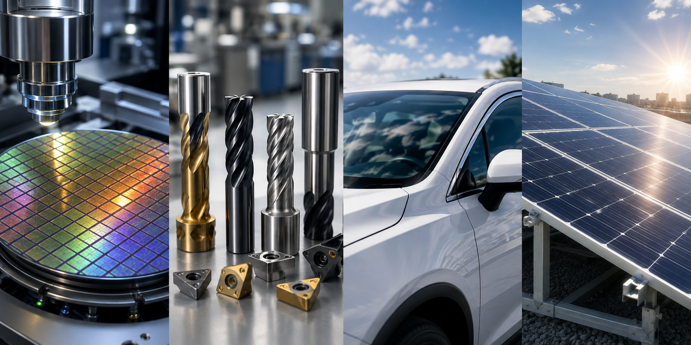

半導体・電子部品
電気の性質を利用する
半導体や電子部品では、電気を流す膜や絶縁する膜など、役割の異なる薄い層を組み合わせて機能をつくります。
薄膜は、特別な研究装置の中だけにあるものではありません。家の中の身近な製品から、工場や最先端の製品まで、さまざまな場所で使われています。
窓、テレビ、スマートフォン、メガネ、照明など、身近なところにも薄膜技術が使われています。


半導体や電子部品では、電気を流す膜や絶縁する膜など、役割の異なる薄い層を組み合わせて機能をつくります。
硬い薄膜で表面を覆うことで、摩耗を抑えたり、工具を長く使えるようにしたりする用途があります。
ガラスや部品など、目的に応じて光学特性や表面保護などの機能を持たせるために薄膜が利用されます。
太陽電池には、光を取り込み電気へ変えるための薄い層や、反射を抑えるための膜などが使われるものがあります。